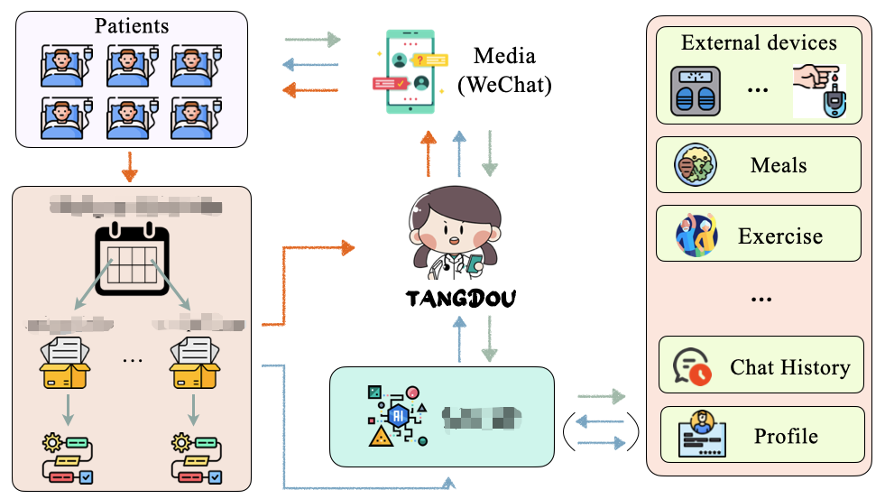

Activity
GitHub
@JIaDLuContributions
Visitors
Page Views

Graduate Researcher · NUS
Machine learning researcher focused on LLMs, healthcare AI, and data-driven systems. Currently pursuing Biomedical Informatics at the National University of Singapore.
Read moreAbout
I'm Lu Jiadong, a graduate student at NUS with a research-oriented background in machine learning, large language models, and data-driven system design.
My work centres on applied LLM methods — SFT/RLHF, domain-specific retrieval (RAG), and lightweight fine-tuning (LoRA) — with a focus on multi-turn interaction modeling and information extraction in healthcare contexts.
I'm particularly drawn to aligning learning objectives, model behaviour, and real-world decision processes through rigorous experimentation and reproducible pipelines.
Data Science and Big Data Technology
Zhuhai, China
View undergraduate journeyMSc Biomedical Informatics
Singapore
Work
AI-driven blood sugar management Agent. Designed autonomous-behaviour workflows and integrated a modular RAG architecture (Router, Search, Memory) to enable scientifically sound, adaptive healthcare AI responses.

Developed a "Time Force" feature engineering technique to weight recent time-series data dynamically. Built a multimodal encoder-decoder combining IBTrACS, ERA5 and GridSat-B1 data with ensemble learning.
Built the front-end of a healthcare AI platform — chat dashboard, task calendar, and SOP workflow configuration for clinical administrators.
Research
Papers across NLP, meteorology, and AI work.
Typhoon Track Prediction Based on TimeForce CNN-LSTM Hybrid Model
A Multimodal Deep Learning Approach for Typhoon Track Forecast by Fusing CNN and Transformer Structures
Enhanced Word-unit Broad Learning System with Sememes
Aspect-level Sentiment Analysis Model Fused with GPT and Multi-layer Attention
Chinese Brand Identity Management Based on Never-Ending Learning and Knowledge Graphs
Tropical Cyclone Ensemble Forecast Framework Based on Spatiotemporal Model
Activity